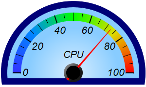
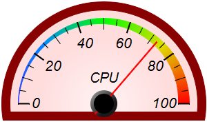
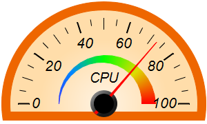
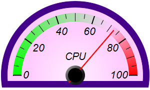
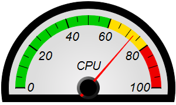
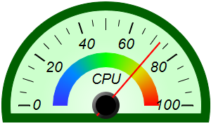

This example demonstrates semicircle meters in various gradient colors, as well as various color scales and pointer types.
The background color in this example changes from a specified color at the border, to a brighter version of the color at the center. The brighter color is derived from the specified color using
BaseChart.adjustBrightness. To achieve the radial gradient effect, these two colors are passed to
AngularMeter.relativeRadialGradient to create a radial gradient color. The gradient color is then passed to
AngularMeter.addScaleBackground to fill the background.
BaseMeter.addColorScale is used to create the color scales in this example. The color scales are created by with different colors, different end point positions and different widths at the end points.
Two pointer types are shown in these meters - a sharp very thin triangular pointer, and a line pointer. They are created using
AngularMeter.addPointer2 with
TriangularPointer2 and
LinePointer2 as parameters.
The following is the command line version of the code in "cppdemo/colorsemicirclemeter". The MFC version of the code is in "mfcdemo/mfcdemo". The Qt Widgets version of the code is in "qtdemo/qtdemo". The QML/Qt Quick version of the code is in "qmldemo/qmldemo".
#include "chartdir.h"
void createChart(int chartIndex, const char *filename)
{
// The value to display on the meter
double value = 72.55;
// The background and border colors of the meters
int bgColor[] = {0x88ccff, 0xffdddd, 0xffddaa, 0xffccff, 0xdddddd, 0xccffcc};
const int bgColor_size = (int)(sizeof(bgColor)/sizeof(*bgColor));
int borderColor[] = {0x000077, 0x880000, 0xee6600, 0x440088, 0x000000, 0x006000};
const int borderColor_size = (int)(sizeof(borderColor)/sizeof(*borderColor));
// Create an AngularMeter object of size 300 x 180 pixels with transparent background
AngularMeter* m = new AngularMeter(300, 180, Chart::Transparent);
// Center at (150, 150), scale radius = 124 pixels, scale angle -90 to +90 degrees
m->setMeter(150, 150, 124, -90, 90);
// Background gradient color with brighter color at the center
double bgGradient[] = {0, (double)(m->adjustBrightness(bgColor[chartIndex], 3)), 0.75, (double)(
bgColor[chartIndex])};
const int bgGradient_size = (int)(sizeof(bgGradient)/sizeof(*bgGradient));
// Add a scale background of 148 pixels radius using the background gradient, with a 13 pixel
// thick border
m->addScaleBackground(148, m->relativeRadialGradient(DoubleArray(bgGradient, bgGradient_size)),
13, borderColor[chartIndex]);
// Meter scale is 0 - 100, with major tick every 20 units, minor tick every 10 units, and micro
// tick every 5 units
m->setScale(0, 100, 20, 10, 5);
// Set the scale label style to 15pt Arial Italic. Set the major/minor/micro tick lengths to
// 16/16/10 pixels pointing inwards, and their widths to 2/1/1 pixels.
m->setLabelStyle("Arial Italic", 16);
m->setTickLength(-16, -16, -10);
m->setLineWidth(0, 2, 1, 1);
// Demostrate different types of color scales and putting them at different positions
double smoothColorScale[] = {0, 0x3333ff, 25, 0x0088ff, 50, 0x00ff00, 75, 0xdddd00, 100,
0xff0000};
const int smoothColorScale_size = (int)(sizeof(smoothColorScale)/sizeof(*smoothColorScale));
double stepColorScale[] = {0, 0x00cc00, 60, 0xffdd00, 80, 0xee0000, 100};
const int stepColorScale_size = (int)(sizeof(stepColorScale)/sizeof(*stepColorScale));
double highLowColorScale[] = {0, 0x00ff00, 70, Chart::Transparent, 100, 0xff0000};
const int highLowColorScale_size = (int)(sizeof(highLowColorScale)/sizeof(*highLowColorScale));
if (chartIndex == 0) {
// Add the smooth color scale at the default position
m->addColorScale(DoubleArray(smoothColorScale, smoothColorScale_size));
} else if (chartIndex == 1) {
// Add the smooth color scale starting at radius 124 with zero width and ending at radius
// 124 with 16 pixels inner width
m->addColorScale(DoubleArray(smoothColorScale, smoothColorScale_size), 124, 0, 124, -16);
} else if (chartIndex == 2) {
// Add the smooth color scale starting at radius 65 with zero width and ending at radius 55
// with 20 pixels outer width
m->addColorScale(DoubleArray(smoothColorScale, smoothColorScale_size), 65, 0, 55, 20);
} else if (chartIndex == 3) {
// Add the high/low color scale at the default position
m->addColorScale(DoubleArray(highLowColorScale, highLowColorScale_size));
} else if (chartIndex == 4) {
// Add the step color scale at the default position
m->addColorScale(DoubleArray(stepColorScale, stepColorScale_size));
} else {
// Add the smooth color scale at radius 55 with 20 pixels outer width
m->addColorScale(DoubleArray(smoothColorScale, smoothColorScale_size), 55, 20);
}
// Add a text label centered at (150, 125) with 15pt Arial Italic font
m->addText(150, 125, "CPU", "Arial Italic", 15, Chart::TextColor, Chart::BottomCenter);
// Demonstrate two different types of pointers - thin triangular pointer (the default) and line
// pointer
if (chartIndex % 2 == 0) {
m->addPointer2(value, 0xff0000);
} else {
m->addPointer2(value, 0xff0000, -1, Chart::LinePointer2);
}
// Output the chart
m->makeChart(filename);
//free up resources
delete m;
}
int main(int argc, char *argv[])
{
createChart(0, "colorsemicirclemeter0.png");
createChart(1, "colorsemicirclemeter1.png");
createChart(2, "colorsemicirclemeter2.png");
createChart(3, "colorsemicirclemeter3.png");
createChart(4, "colorsemicirclemeter4.png");
createChart(5, "colorsemicirclemeter5.png");
return 0;
}
© 2023 Advanced Software Engineering Limited. All rights reserved.